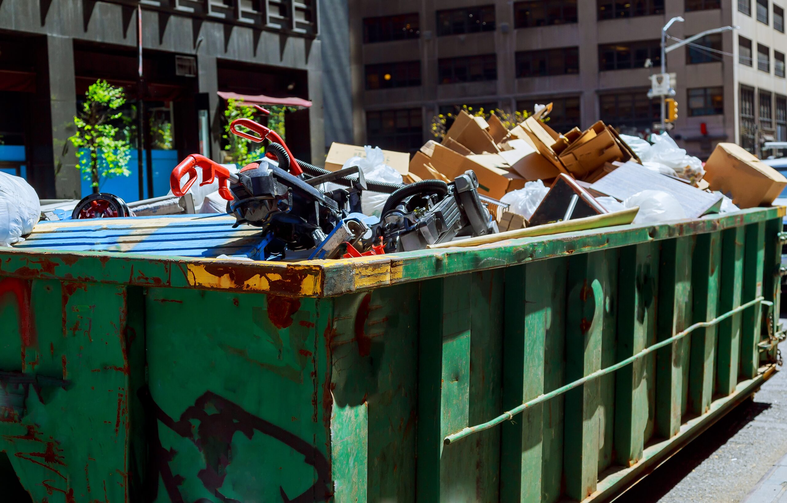
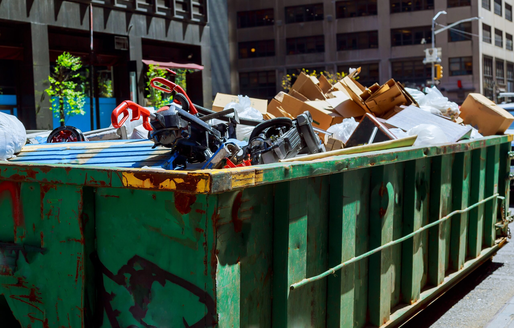

Stephens Sanitation Services is a locally owned and operated garbage and sanitation company in Ringgold, Georgia. We are committed to keeping our community clean, safe, and environmentally responsible. We proudly serve local homes and small businesses within Catoosa County with dependable trash collection, recycling, and waste management services. Our team focuses on reliable pickup schedules, affordable pricing, and friendly customer service you can count on. As a small local business, we value our relationships with customers and take pride in helping maintain clean neighborhoods and a healthier environment for everyone.
 

Choosing Stephens Sanitation Services means choosing dependable service from a team that truly cares about the community it serves. We pride ourselves on reliable pickup schedules, friendly customer service, and affordable pricing for both homes and small businesses. Our team follows safe and responsible waste disposal practices while working with local facilities to minimize environmental impact. As a local sanitation company, we are committed to keeping neighborhoods clean, building trust with our customers, and providing service you can count on every week.
© 2026 Stephens Sanitation Services. All rights reserved.